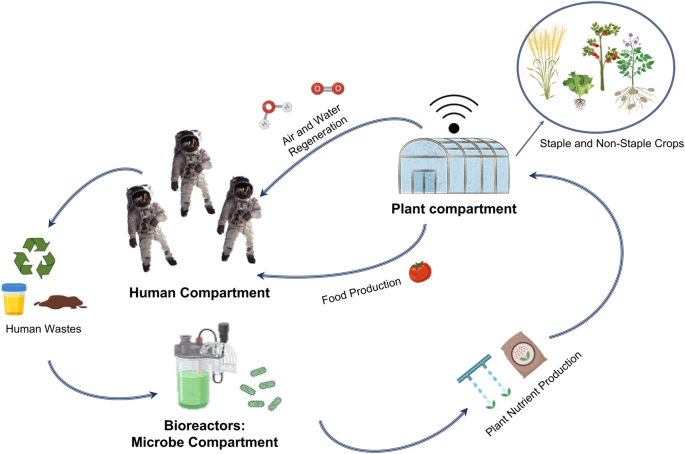
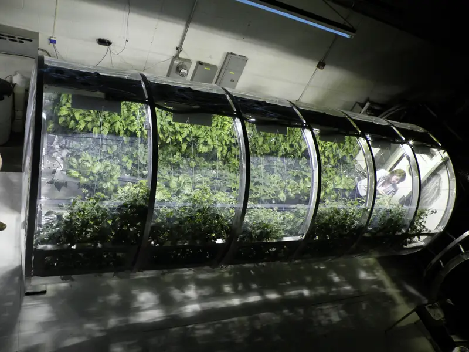
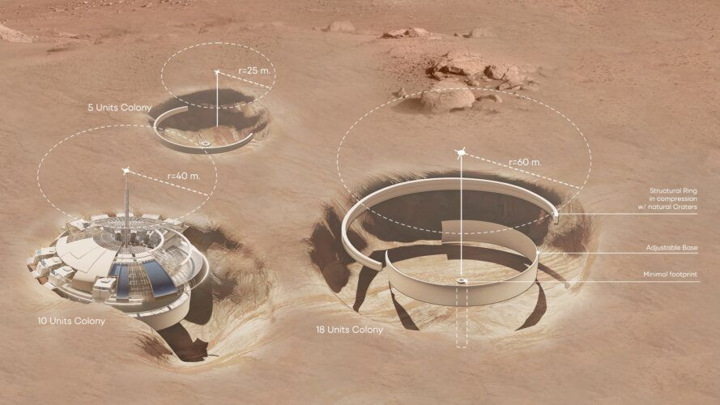

Technology Overview
This section delves into the technological advancements necessary for establishing and sustaining human life on Mars. We explore crucial systems and innovations designed to support a Martian colony.
Life Support Systems
Establishing a reliable life support system is paramount for long-term survival on Mars. Research by Woo (2023) highlights the importance of advanced recycling technologies for air and water, essential for maintaining a breathable atmosphere and adequate hydration levels in closed environments. Genetically modified plants play a pivotal role in bioregenerative life support systems, offering the dual benefits of food production and air purification.
Habitat Design and Construction
The hostile Martian environment, characterized by extreme temperature fluctuations and high radiation levels, demands the creation of durable and self-sustaining habitats. Zhao (2023) examines the use of Martian regolith to develop concrete-like materials suitable for constructing robust structures. Such innovations not only reduce the dependency on Earth-based resources but also provide critical thermal and radiation insulation, ensuring the safety and well-being of human occupants.
Resource Utilization
Effective utilization of in-situ resources is fundamental to the success of Mars colonization. Techniques for extracting water from the Martian soil and converting atmospheric CO2 into oxygen are pivotal. These methods support not only life but also the production of fuel, which is essential for the operation of machinery and vehicles on Mars, as explored in studies by Yashchenko (2024).